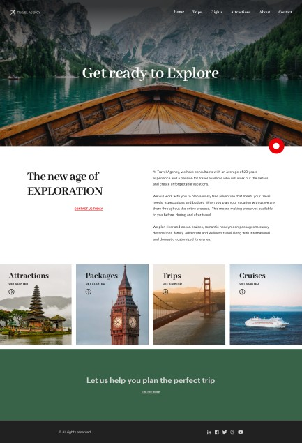

A UI screen in GeneXus is composed of related controls: some of them are inside other controls, or are siblings; they are before or after, to the left or to the right, and even on different layers so they may overlap.
Suppose you want to obtain the following screen, according to what was discussed in Design System Object - Developing an application.

It will be implemented in GeneXus as a Web Panel or a Panel (if it is for Angular). For the sake of simplicity, choose the standard web platform. The other option will be completely analogous.
Of course, bringing all the componentization ideas to the table, you would implement a Master Page for the header and footer, and leave the specific content (what you see in the middle) in the Web Panel. But don’t worry about this now. Focus only on the Header, regardless of which panel it is implemented in (it will be in the Master Page):
To obtain this screen, the first thing you need to do is to define the controls, which will provide a structure to the layout. Then each one will have to be coded to show what it has to show, how it has to show it, and with the expected behavior.
Since GeneXus 17 upgrade 6.
| Backlinks |
| Toc:Getting started with Design System Objects |